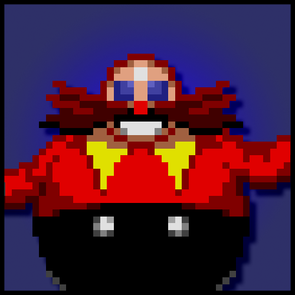

Dr. Ivo Robotnik invades the South Island with his robit army in search of the powerful Chaos Emeralds. To make matters worse, he snatches the innocent animals on the island and turns them into mechanical creatures called the "Badniks". Play as the titular character: Sonic the Hedgehog to save the colorful zones of South Island and thwart Robotnik's plans of retrieving the illustrous emeralds.
| Sonic the Hedgehog | Dr. Ivo Robotnik |
|---|---|
|  | |
| The titular character of the game (and the entire series). Sonic runs at the speed of sound, free like the wind without anything holding him down. He's here to save the Island, free the animals of the island from Robotnik's clutches and prevent him from getting the Chaos Emeralds. |
The man using all 300 of his IQ to gain the powers of the Chaos Emeralds with the help of the mechanized army of Badniks and conquer the world. |
This is the first game in the Sonic the Hedgehog series and it made one hell of an impression. Contrasting the usual slow paced nature of platformers during its time, it sets out to be different by allowing players to traverse levels at blazing speed with a character who's got attitude. Go through 6 zones as Sonic while you run fast, pass through loops, collect rings to avoid death, defeat enemies and face off against the evil Dr. Robotnik. Collect the Chaos Emeralds yourself by going through the special stages by accessing a gold ring at the end of a level with at least 50 rings.
Personally, this is my least favorite entry of the classic games. Though it markets itself as going fast, much of the game is platforming oriented, that's not to say it is bad by any means, I've had my share of fun with it. If you expect to go fast all the time, I'd say you'd be dissapointed with it in the first run. Yes I say the first run, because this game actually has a lot of replay value, the core appeal of the series is to learn the intricacies of the levels and become good enough to that you earn the speed yourself through sheer skill. For now I don't actually have the patience to go through that endeavor but I know that if I did, I'd probably have more fun with this game. Also the special stages are bogus, as in, no one actually likes that stuff, it's mostly annoying to deal with and you need to do it at least 6 times to get the "good ending" of the game.
You can buy the game off of steam and off the google play store/apple store. Preferably get the mobile version as it's more refined than the steam version, which is basically a 1:1 port of the genesis version of the game.